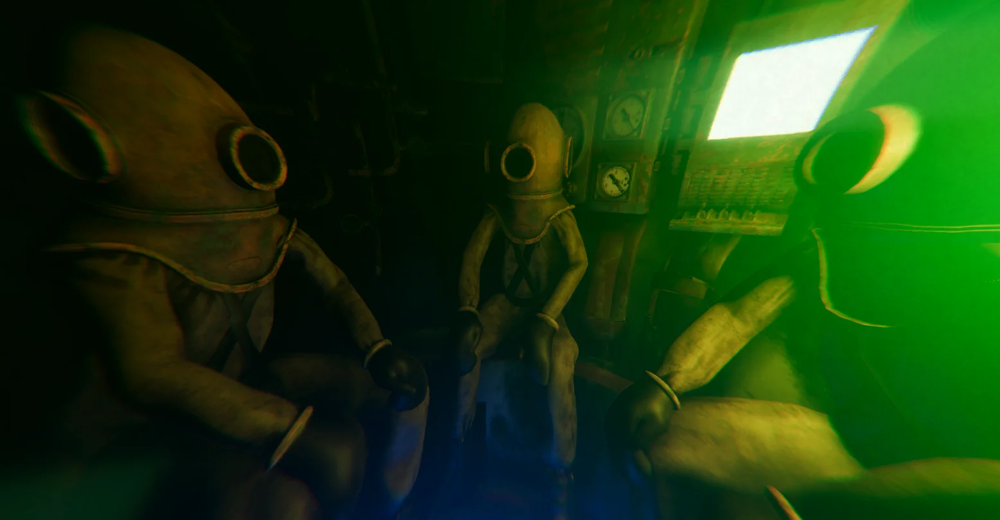

01
Released game
22 Minutes
Available on SteamWatch the official trailer above, then visit the Steam page for full details and availability.
Open Steam page ↗
Games / Interactive work
Released work and current productions from Oblix Studio. Each project is shown directly on the page—no pop-ups or hidden galleries.
2026 · OngoingReleased game
Watch the official trailer above, then visit the Steam page for full details and availability.
Open Steam page ↗Game in development

A multiplayer underwater horror game focused on saturation diving, teamwork, environmental danger and the fear of what waits beyond the light.
Development imagery · Work in progressGame in development
An unreleased project currently being developed by Oblix Studio. The video above is early development footage and may not represent the final game.
Not yet releasedAsset stores
Oblix Studio assets are available through Sketchfab and Fab.